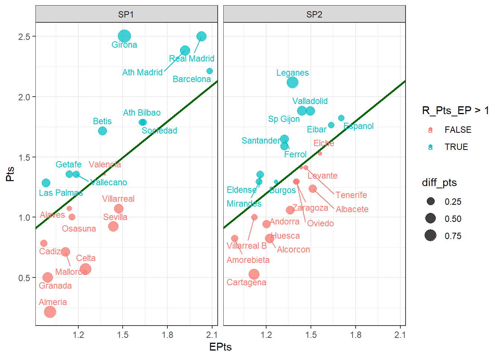

## Librerías
library(tidyverse)
# library(broom)Exámen práctico PRIA
1. Football-data: Datawrangling básico
En esta sección se realizarán tareas de descarga y lectura de datos, manipulación básica, selección de variables, conversiones de tipos, y exploración de la estructura de datos.
urls: https://raw.githubusercontent.com/jesusturpin/curintel2324/main/data/SP1.csv https://raw.githubusercontent.com/jesusturpin/curintel2324/main/data/SP2.csv
1.1 Descargando datos externos
Descarga los resultados de los partidos de fútbol de 1º y 2º división españolas y guárdalos en las variables SP1 y SP2 respectivamente.
SP1 <-
SP2 <- 1.2 Selección de datos (0.1 Pts)
Para ambos dataframes, selecciona las columnas Div, Date, HomeTeam, AwayTeam, FTHG, FTAG, PSCH, PSCA, que se corresponden con:
Div: Liga
Date: Fecha
HomeTeam: Local
AwayTeam: Visitante
FTHG: Marcador Local
FTAG: Marcador Visitante
FTR: Resultado: “H” (Victoria Local), “D” (Empate), “A”(Victoria Visitante)
PSCH: Cotización/cuota de la victoria equipo local justo al comienzo del encuentro (casa PS).
PSCD: Cotización/cuota del empate justo al comienzo del encuentro (casa PS).
PSCA: Cotización/cuota de la victoria visitante justo al comienzo del encuentro (casa PS).
Aclaración: La cotización o cuota se corresponde con el multiplicador o cantidad bruta que se pagaría sobre una apuesta acertada. Por ejemplo, si la victoria local tiene valor PSCH = 2.4, un apostante que haya pronosticado y acertado ese resultado, recibiría 2.4 € por cada euro apostado. Si apostó 10 €, recibiría 24 €, si su inversión fue 10 €, su ganancia neta serían 14.
SP1_1.1 <- SP1 %>%
---
SP2_1.2 <- SP2 %>%
---1.3 Unión por filas (0.25 Pts)
Une por filas ambos dataframes y guárdalos en la variable SP_1.3
SP_1.3 <- ---1.4 Estructura resultante (0.1 Pts)
Muestra la estructura del dataframe SP_1.3 e indica:
- Número de filas:
- Número de columnas:
SP_1.3 %>%
---1.5 Paquetes y librerías (0.25 Pts)
Instala el paquete skimr, carga la librería y utiliza la función skim sobre el dataframe SP_1.3. ¿Hay alguna variable con huecos o valores perdidos (NULL, NA, espacios, etc.)?
----
----1.6 Tipos de datos y conversiones (0.5 Pts)
De las variables anteriores, indica cuáles son de los siguientes tipos:
Numéricas discretas:
Numéricas contínuas:
Categóricas nominales:
Categóricas ordinales:
Convierte el tipo de la variable Date a tipo fecha (Date) . Convierte a factor el resto de variables categóricas. Una de ellas es ordinal, por lo que no debes olvidar asignar los niveles.
Guarda el dataframe resultante en la variable SP_1.6
SP_1.6 <- SP_1.3 %>%
---(Date = as.Date(Date, format = "%d/%m/%Y"),
Div = ---(Div, --- = ---))Ahora aplica la función resumen, e indica:
- Nº partidos de 1ª:
- Nº partidos de 2ª:
- Fecha 1º partido:
- Fecha último partido:
- Máximo nº de goles:
- Cuota más alta: ¿a qué resultado: H, D ó A?
---(SP_1.6)2. Football-data: Datawrangling avanzado
En esta sección, se crearán variables y métricas nuevas a partir de los datos originales.
2.1 Retorno y comisión (0.25 Pts)
El retorno indica la proporción de premios que la sala retorna sobre lo recaudado al conjunto de sus apostantes en un punto de equilibrio para un partido y unas cotizaciones al local, empate y visitante registradas en las columnas PSCH, PSCD y PSCA respectivamente. El valor lógicamente será un número entre 0 y 1, pues si es superior a 1, ¡la banca pierde! y como te imaginarás, eso no ocurre.
La fórmula del retorno para cotizaciones en formato decimal, como vienen en football-data es:
\[Ret = \frac{1}{{\frac{1}{PSCH} + \frac{1}{PSCD} + \frac{1}{PSCA}}}\]
Si el retorno es la proporción que reparte de lo recaudado por evento, la comisión promedio que gana la sala es:
\[Fee = 1 - Ret\] Crea las columnas Ret y Fee según las fórmulas descritas. Guarda el resultado en SP_2.1
SP_2.1 <- SP_1.6 %>%
... 2.2 Cuotas ajustadas (0.5 Pts)
Ahora crea 3 nuevas columnas PSCH_adj, PSCD_adj y PSCA_adj cuyo que son las cuotas ajustadas, es decir, las cuotas originales ofrecidas por una determinada sala de apuestas si eliminamos comisiones implícitas. Si en esas cuotas calculásemos Fee y Ret, los resultados serían 0 y 1 respectivamente. Puedes verificar si lo has hecho bien si calculas Ret y obtienes siempre 1. Guarda el dataframe resultante en SP_2.2.
Sus fórmulas son:
- \(PSCH_{\text{adj}} = PSCH \left( \frac{1}{PSCH} + \frac{1}{PSCD} + \frac{1}{PSCA} \right)\)
- \(PSCD_{\text{adj}} = PSCD \left( \frac{1}{PSCH} + \frac{1}{PSCD} + \frac{1}{PSCA} \right)\)
- \(PSCA_{\text{adj}} = PSCA \left( \frac{1}{PSCH} + \frac{1}{PSCD} + \frac{1}{PSCA} \right)\)
Para no repetir cálculos, vamos a definir la variable probabilidades implícitas totales Total_prob_imp:
\(Total\_prob\_imp = \frac{1}{PSCH} + \frac{1}{PSCD} + \frac{1}{PSCA}\)
De este modo, las fórmulas quedarían:
- \(PSCH_{\text{adj}} = Total\_prob\_imp \cdot PSCH\)
- \(PSCD_{\text{adj}} = Total\_prob\_imp \cdot PSCD\)
- \(PSCA_{\text{adj}} = Total\_prob\_imp \cdot PSCA\)
Elimina la variable Total_prob_imp si las has creado.
SP_2.2 <- SP_2.1 %>%
...
#(-Total_prob_imp)2.3 Probabilidades estimadas por la casa de apuestas (0.25 Pts)
Una vez calculadas las cuotas ajustadas sin margen, calcular las probabilidades es tan simple como calcular la inversa de la cuota de cada posible evento:
- \(P_H = \frac{1}{PSCH_{\text{adj}}}\)
- \(P_D = \frac{1}{PSCD_{\text{adj}}}\)
- \(P_A = \frac{1}{PSCA_{\text{adj}}}\)
Añade 3 nuevas columnas llamadas PH, PD y PA que se corresponden con las probabilidades de victoria local, empate o victoria visitante según se estima a partir de las cuotas.
Ordena los resultados por Fecha, División y por orden alfabético del equipo local. Muestra las 10 primeras filas
SP_2.3 <-
SP_2.2 %>%
---(PH = 1/PSCH_adj,
PD = 1/PSCD_adj,
PA = 1/PSCA_adj) %>%
---(Date, Div, HomeTeam) 2.4 Pivote o join (1 Pts)
Ahora el desafío consiste en dividir el dataframe de partidos a equipos. Cada fila ahora se debe duplicar para mostrar la información desde la perspectiva del equipo local en una y desde el equipo visitante en la otra fila.
Se eliminan las columnas HomeTeam y AwayTeam, sustituyéndose por una nueva llamada HomeAway y otra con los valores llamada Equipo. Coloca las nuevas columnas en la 3º y 4º posición.
glimpse(SP_2.4)Rows: 652
Columns: 18
$ Div <fct> SP1, SP1, SP1, SP1, SP2, SP2, SP2, SP2, SP1, SP1, SP1, SP1, S…
$ Date <date> 2023-08-11, 2023-08-11, 2023-08-11, 2023-08-11, 2023-08-11, …
$ HomeAway <chr> "HomeTeam", "AwayTeam", "HomeTeam", "AwayTeam", "HomeTeam", "…
$ Equipo <chr> "Almeria", "Vallecano", "Sevilla", "Valencia", "Amorebieta", …
$ FTR <fct> A, A, A, A, D, D, H, H, A, A, D, D, D, D, A, A, H, H, H, H, A…
$ FTHG <int> 0, 0, 1, 1, 1, 1, 2, 2, 0, 0, 1, 1, 1, 1, 0, 0, 4, 4, 2, 2, 0…
$ FTAG <int> 2, 2, 2, 2, 1, 1, 0, 0, 2, 2, 1, 1, 1, 1, 1, 1, 0, 0, 0, 0, 2…
$ PSCH <dbl> 2.66, 2.66, 1.94, 1.94, 3.19, 3.19, 1.94, 1.94, 3.44, 3.44, 2…
$ PSCD <dbl> 3.25, 3.25, 3.46, 3.46, 3.13, 3.13, 3.40, 3.40, 3.50, 3.50, 2…
$ PSCA <dbl> 2.96, 2.96, 4.58, 4.58, 2.54, 2.54, 4.55, 4.55, 2.24, 2.24, 3…
$ Ret <dbl> 0.9789813, 0.9789813, 0.9776873, 0.9776873, 0.9740235, 0.9740…
$ Fee <dbl> 0.02101872, 0.02101872, 0.02231265, 0.02231265, 0.02597646, 0…
$ PSCH_adj <dbl> 2.717110, 2.717110, 1.984274, 1.984274, 3.275075, 3.275075, 1…
$ PSCD_adj <dbl> 3.319777, 3.319777, 3.538964, 3.538964, 3.213475, 3.213475, 3…
$ PSCA_adj <dbl> 3.023551, 3.023551, 4.684524, 4.684524, 2.607740, 2.607740, 4…
$ PH <dbl> 0.3680381, 0.3680381, 0.5039625, 0.5039625, 0.3053365, 0.3053…
$ PD <dbl> 0.3012250, 0.3012250, 0.2825686, 0.2825686, 0.3111896, 0.3111…
$ PA <dbl> 0.3307369, 0.3307369, 0.2134689, 0.2134689, 0.3834738, 0.3834…SP_2.4 <- SP_2.3 %>%
---(cols = ---, names_to = ---, values_to = ---) %>%
---(---, ---, ---, ---, everything())2.5 Métricas: puntos (Pts), puntos esperados (EPts) (1 Pts)
Crea las siguientes variables:
- Puntos (Pts) 3 por cada victoria local y 1 por cada empate
- Puntos esperados (EPts). En este caso, no importa el resultado. Los puntos esperados se calculan multiplicando 3 por la probabilidad de victoria y sumando la probabilidad de empate. Si un equipo tiene una probabilidad de victoria del 50 % y su probabilidad de empate es 25 %, sus puntos esperados serían: 0.5x3 + 0.25 = 1.75
head(SP_2.5)# A tibble: 6 × 20
Div Date Equipo Pts EPts HomeAway FTR FTHG FTAG PSCH PSCD
<fct> <date> <chr> <dbl> <dbl> <chr> <fct> <int> <int> <dbl> <dbl>
1 SP1 2023-08-11 Almeria 0 1.41 HomeTeam A 0 2 2.66 3.25
2 SP1 2023-08-11 Vallecano 3 1.29 AwayTeam A 0 2 2.66 3.25
3 SP1 2023-08-11 Sevilla 0 1.79 HomeTeam A 1 2 1.94 3.46
4 SP1 2023-08-11 Valencia 3 0.923 AwayTeam A 1 2 1.94 3.46
5 SP2 2023-08-11 Amorebieta 1 1.23 HomeTeam D 1 1 3.19 3.13
6 SP2 2023-08-11 Levante 1 1.46 AwayTeam D 1 1 3.19 3.13
# ℹ 9 more variables: PSCA <dbl>, Ret <dbl>, Fee <dbl>, PSCH_adj <dbl>,
# PSCD_adj <dbl>, PSCA_adj <dbl>, PH <dbl>, PD <dbl>, PA <dbl>SP_2.5 <- SP_2.4 %>%
---(EPts = ----------) %>%
---(Pts = ---------------- ) %>%
select(Div, Date, Equipo, Pts, EPts, everything()) 3. Football-data: Resumen y Visualización
3.1 Tabla de clasificación por EPts (0.5 Pts)
Implementa una función llamada ranking_epts que reciba 4 parámetros e imprima el ranking según los parámetros:
- “team.results”: data frame con los resultados partido a partido de cada equipo
- “liga”: cadena de texto “SP1” o “SP2”
- “orden.epts”. Opcional, su valor por defecto es FALSE.
- “invertir.orden”. Opcional, su valor por defecto es FALSE.
La salida tiene que ser un dataframe con 4 columnas en este orden:
- Puesto: ranking o clasificación 1,2,3…
- Equipo
- Pts
- EPts
La clasificación se ordena por Pts o por EPts, según el parámetro opcional “orden.epts” y el orden es de mayor a menor puntuación, excepto si el parámetro invertir.orden está a TRUE.
ranking_epts <- function(---, ---, ------, ------) {
# Si el orden es pts,
# entonces
# ¿orden por defecto? si --> Imprime clasificación por pts mayor a menor
# no --> Imprime clasificación por pts menor a mayor
# Si el orden es Epts,
# entonces
# ¿orden por defecto? si --> Imprime clasificación por Epts mayor a menor
# no --> Imprime clasificación por Epts menor a mayor
}Test Función:
ranking_epts(SP_2.5, "SP1", orden.epts = TRUE, invertir.orden = TRUE)
ranking_epts(SP_2.5, "SP2")3.2 Tabla de clasificación por Ratio Pts/EPts (0.5 Pts)
Crea la variable R_Pts_EP e imprime la clasificación por ese criterio. Utiliza ambas ligas en conjunto
- Ratio Pts vs Epts (R_Pts_EP). Dividir los puntos conseguidos entre los esperados. Un valor por encima de 1 indica que el equipo lo ha hecho mejor de lo esperado y por debajo de 1 indica lo contrario.
SP_2.5 %>%
g---(---) %>%
s---(R_Pts_EP = -----/---) %>%
---(-----) %>%
---(Puesto = row_number()) %>%
select(Puesto, everything())3.3 Visualización (0.8 Pts)
Realiza un diagrama de dispersión enfrentando el promedio de puntos Pts (y) vs Promedio de puntos esperados EPts (x). Usa un lienzo para cada gráfica, según su liga.
- Dibuja un diagrama de dispersión enfrentando Pts vs EPts en cada equipo.
- El color se mapea según si el ratio Pts/EPts es mayor que uno.
- Mapea el tamaño según el valor absoluto de diff_pts abs(Pts - Epts)
- Añade una línea recta con pendiente 1 y que pase por el origen.
- Crea facetas para representar cada liga en un lienzo diferente
- Usa text_repel para mostrar los nombres de los equipos
library(ggrepel) # Instala el paquete si es necesario
SP_2.5 %>%
group_by(Div, Equipo) %>%
summarise(----, # Puntos
----, # Puntos esperados
----, # Ratio
diff_pts = mean(abs(Pts - EPts)), # Diferencia abs Pts - EPts
.groups = "drop") %>%
ggplot(aes(x = ---, y = ---, size = ---, color = --- > 1)) +
geom_(alpha = 0.75)+
geom_abline(intercept = ---, slope = ---, color = "darkgreen", size = 1)+
geom_text_repel(---(--------), size = 3, vjust = -1) +
facet_wrap(~ ---) +
theme_bw()